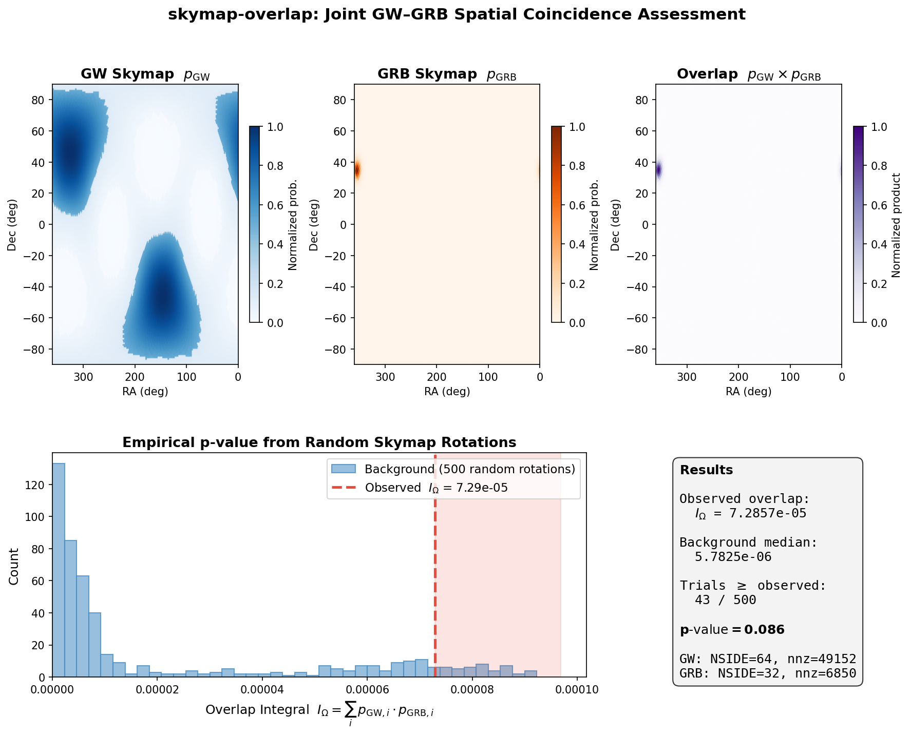

Method¶
This page describes the statistical method implemented in skymap-overlap, using random skymap rotation trials.
Background: The RAVEN Method¶
When a gravitational wave (GW) event is detected in temporal coincidence with a gamma-ray burst (GRB), the joint significance depends on both the temporal and spatial coincidence.
The original RAVEN method (Urban et al. 2016) computes the joint FAR as:
where:
- \(\text{FAR}_{\text{gw}}\) is the gravitational wave false alarm rate
- \(R_{\text{grb}}\) is the GRB detection rate
- \(\Delta t\) is the coincidence time window
- \(I_\Omega = \sum_i p_{\text{gw}}(i) \times p_{\text{grb}}(i)\) is the skymap overlap integral
Problem with RAVEN¶
Dividing by \(I_\Omega\) assumes that the overlap integral follows a known distribution. In practice, the distribution of \(I_\Omega\) depends on the specific skymap morphologies, and dividing by it does not yield a uniformly distributed FAR. This leads to biased significance estimates, particularly under-representing low-significance candidates.
The Corrected Method¶
Empirical P-value (Eq 4)¶
Instead of using \(I_\Omega\) directly, we compute an empirical p-value:
- Compute the observed overlap integral \(I_\Omega^{\text{obs}}\) between the GW and GRB skymaps
- Rotate the GRB skymap to \(N\) uniformly random sky positions
- At each position, compute the overlap with the GW skymap
- The p-value is the fraction of trials where the overlap exceeds the observed value:
This p-value is uniformly distributed under the null hypothesis (no spatial coincidence), regardless of the skymap morphology.
Joint FAR (Eq 3)¶
The corrected joint FAR combines the temporal FAR with the spatial p-value using a log-remapping that ensures the result is uniformly distributed when both inputs are uniform:
where \(\text{FAR}_{\text{gw,max}}\) is the maximum GW FAR considered by the pipeline (e.g., 2/day).
The \(1 - \ln(\cdot)\) term is derived from the product distribution of two uniform random variables. Without it, the product \(\text{FAR}_{\text{gw}} \times p\) would follow a non-uniform distribution (it would be biased toward smaller values).
Visualization¶
The figure below illustrates the full pipeline on a real GW+GRB skymap pair:

Top row: The GW skymap (LIGO BNS simulation, multi-lobed), the Fermi GBM localization, and their pixel-by-pixel product — only the region where both have significant probability contributes to the overlap integral.
Bottom left: The Monte Carlo background distribution. The GRB skymap is rotated to 500 random sky positions and the overlap recomputed each time. Most random placements yield near-zero overlap (the skymaps don't intersect), but the observed overlap (red dashed line) sits in the tail — only 8.6% of random trials exceed it.
Implementation Details¶
Sparse HEALPix Representation¶
Skymaps are stored as sparse arrays of (pixel_index, probability) pairs,
sorted by pixel index. This enables:
- O(nnz) rotation: Only non-zero pixels need to be transformed
- O(nnz_a + nnz_b) overlap: Merge-join on sorted indices instead of iterating over the full sky
- Low memory: A typical GRB skymap with ~1000 non-zero pixels at nside=256 uses ~16 KB instead of ~6 MB
Rotation via Rodrigues' Formula¶
To rotate a skymap from its peak position to a random target position:
- Convert source and target positions to Cartesian unit vectors
- Compute the rotation axis (cross product) and angle (dot product)
- Build a 3x3 rotation matrix using Rodrigues' formula
- Apply the rotation to each non-zero pixel's center coordinates
- Re-hash the rotated coordinates to HEALPix indices
- Accumulate probabilities (multiple source pixels may land on the same target pixel)
Resolution Matching¶
When two skymaps have different NSIDE parameters, the coarser map is automatically upsampled by splitting each pixel into sub-pixels with equal probability. This ensures the overlap integral is computed at the finer resolution.
Parallelism¶
The rotation trials are embarrassingly parallel. Each trial uses an
independent RNG stream (ChaCha8 seeded with base_seed + trial_index),
and the computation is distributed across all available CPU cores using
rayon.
References¶
- Urban, A. L. et al. (2016). "First results of the RAVEN pipeline."